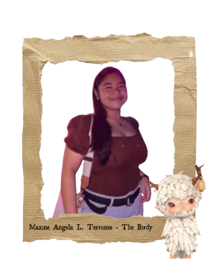

Maxine Angela L. Terrones
I am Maxine Angela L. Terrones and I love watching movies, talking with my friends/family, sleeping.
Why I Chose 'The Birdy' Hirono Figurine

Seeing this figure, hirono, with the name of birdy—Birdy from Hirono is a symbol of quiet resilience and gentle observation. With its delicate form and watchful eyes, Birdy reflects the kind of presence that doesn't demand attention—but notices everything.
Hobbies
- I love wathing movies
- I love talking with my friends/family
- I love sleeping
Fun Facts
- I can sleep for 18 hours straight